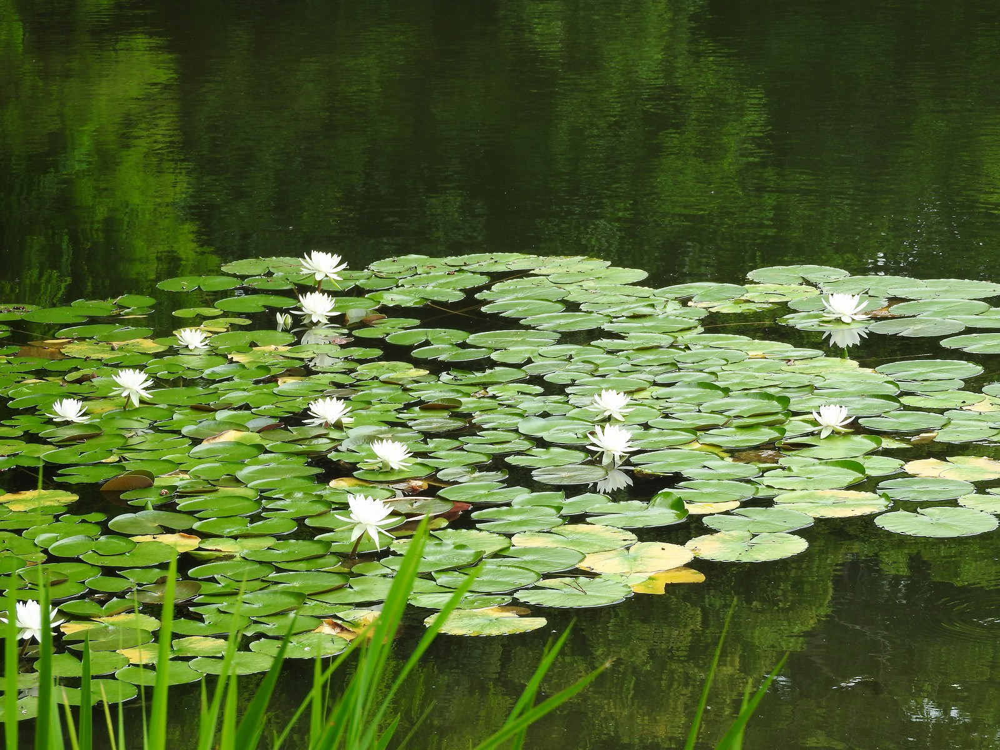

<!DOCTYPE html!>
<html lang="ja">
<head>
<meta charset="utf-8">
<title>釣り人のささやき</title>
<meta name="viewport" content="width=device-width">
<link rel="stylesheet" href="index.css">
</head>
<body>

<div class="box1">
  <div class="site">
  <h1><a href="#">つりびとのささやき</a><h1>
  </div>
</div>
<div class="box2">
  <nav class="menu">
  <ul>
  <li><a href="#">トップ</a></li>
  <li><a href="#">ガジエット</a></li>
  <li><a href="#">　釣 り　</a></li>
  <li><a href="#">　料 理　</a></li>
  <li><a href="#">お問い合わせ</a></li>
  </ul>
  </nav>
</div>

<div class="boxA">
<div class="box3">
  <article class="kiji">
  <h1>ついにきたぞこの季節</h1>

  <p>

  <p>3月！バスフィッシングファンにはたまらないシーズンです！
  なんといっても狙いの　「デカバス」、「春バス」といわれる活
  性があるブラックバスです。なぜ活性化しているのかというと産
  卵を控えているからです。そのためどんなルアーやワームでも基
  本バクバク食べてくれます！</p>

  <p>ということでさっそくいつもの池へ！
  釣り始めるポイントはシャロー（水深が浅い）かつストラクチャ
  ー（バスが身を隠せる障害物など）のあるベストポイントを発見
  始めは、トップ系（水に浮く）のルアーであるポッパーで探りま
  した。釣りを始めて10分後くらいにヒット！
  40cmオーバーのなかなか大きいサイズでした。今年初のバス釣りで
  とても引きがよく嬉しいですね。</p>
</article>
</div>

<div class="box4">
  <aside class="sidemenu">
  <h1>特集記事</h1>
  <ul>
  <li><a href="#">やっぱり釣れるのはカエルだった</a></li>
  <li><a href="#">ワームを溶かして自作する方法</a></li>
  <li><a href="#">簡単 リールの選び方</a></li>
  <li><a href="#">アクションが大事</a></li>
  </ul>
  </aside>


  <aside class="ninkimenu">
  <h1>人気記事</h1>
  <ul>
  <li><a href="#">バス釣るならコレ</a></li>
  <li><a href="#">ベイトリール初心者へ</a></li>
  <li><a href="#">簡単 リールの選び方</a></li>
  <li><a href="#">ロッドが大切</a></li>
  </ul>
  </aside>
</div>
</div>

<div class="box5">
  <div class="copyright">
  <p>Copyright &copy;つりびとのささやき</p>
  </div>
</div>

</body>

</html>
